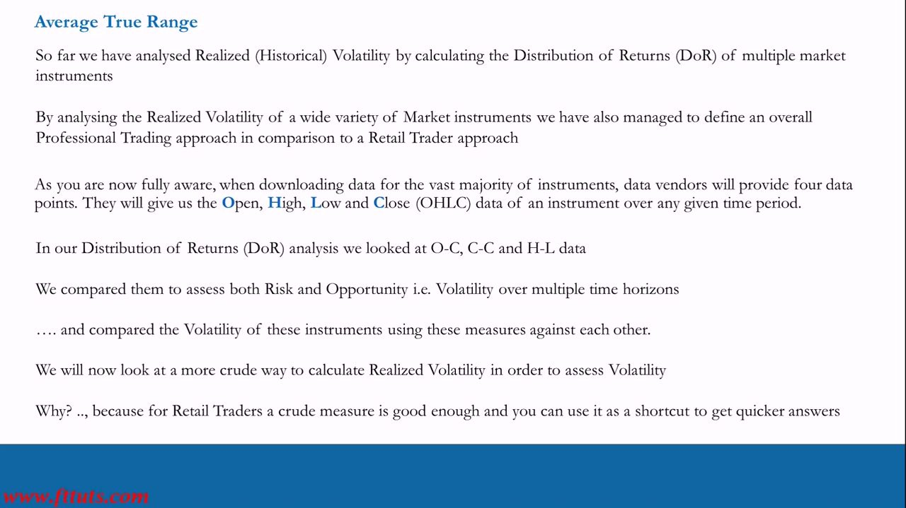
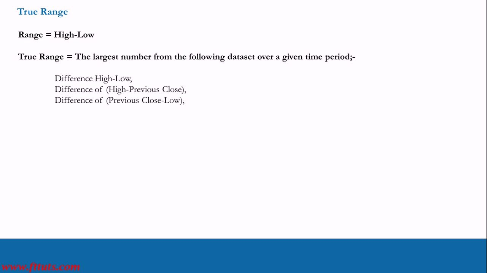
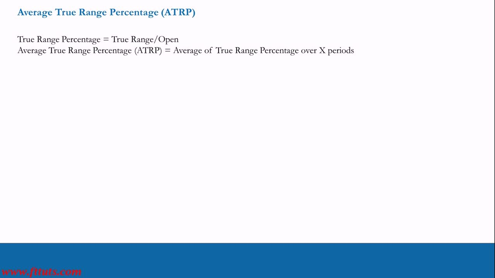
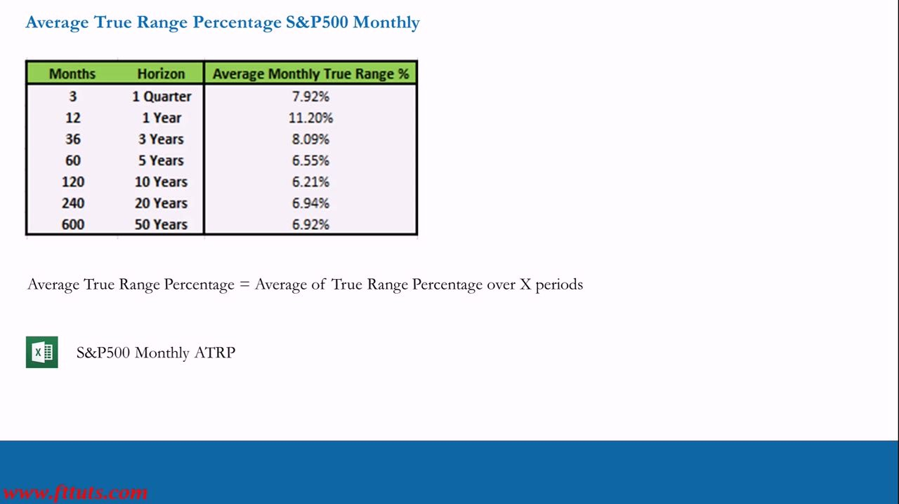
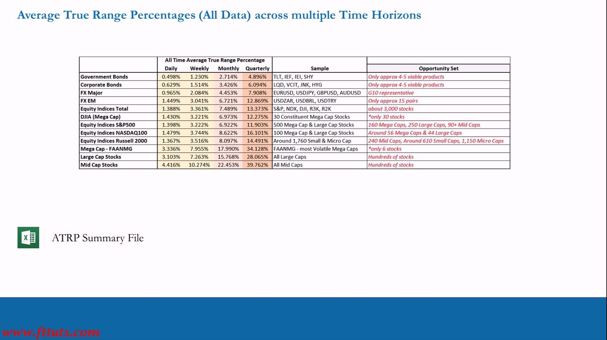
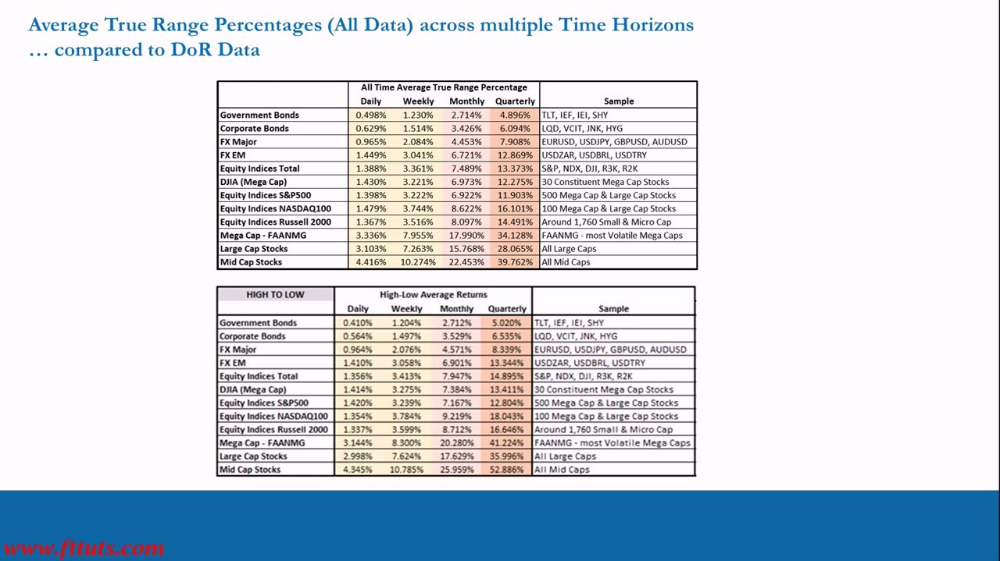
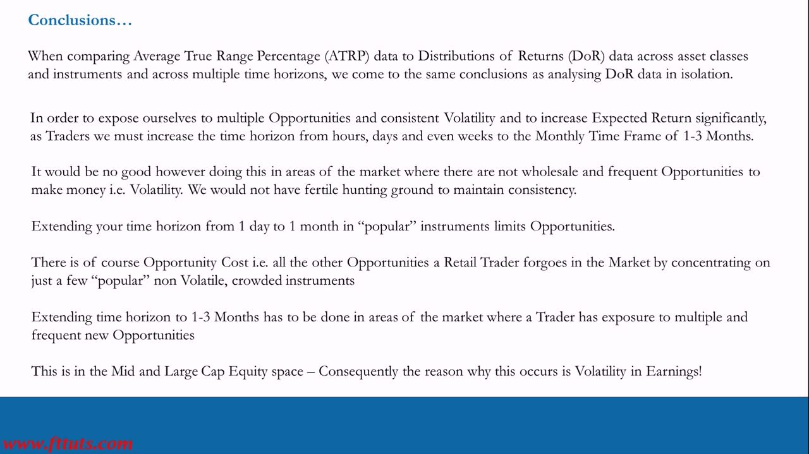
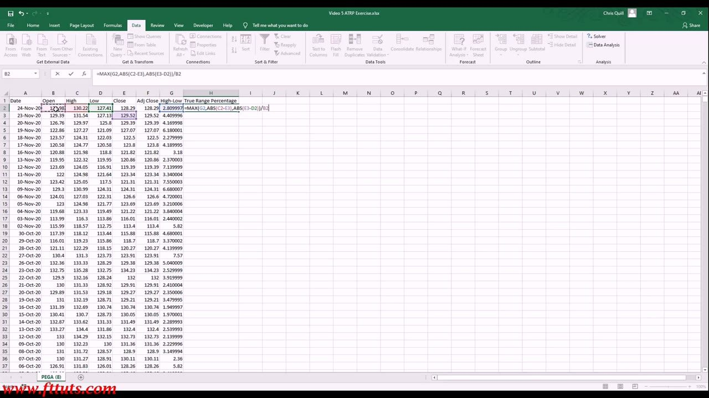
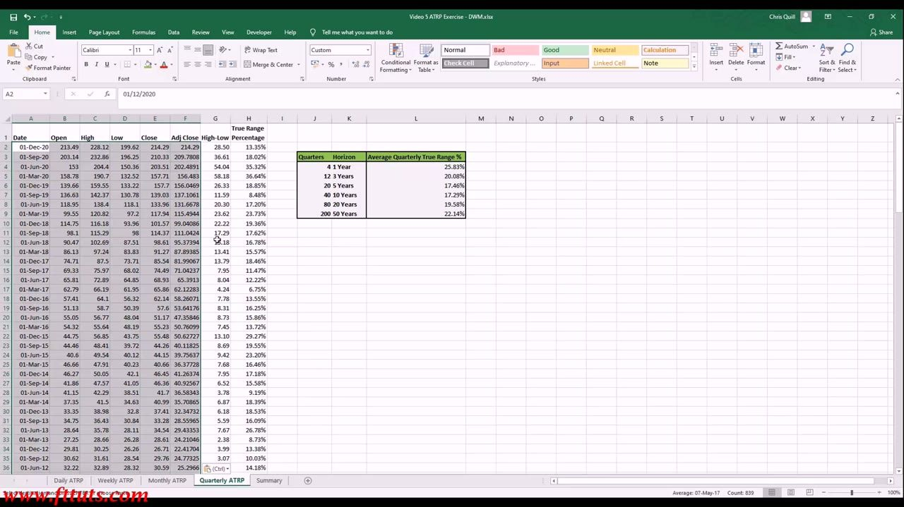
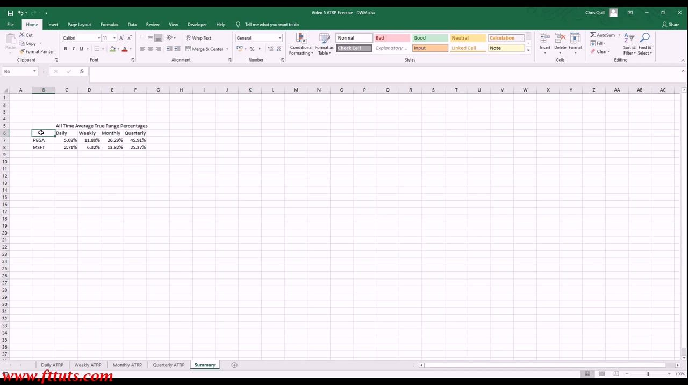

Realized Volatility 3
Average True Range Percentage (ATRP) — the crude, fast shortcut to realized volatility that reaches the same conclusions as the Distribution of Returns
ATRP is a cruder but 'good enough' way to measure realized volatility for retail traders short on time: take the True Range of each bar (the largest of High-Low, |High-PrevClose|, |PrevClose-Low|), divide by the Open, and average that percentage over X periods — it lands on the same opportunity/risk ordering as the full DoR study, much faster.
The gist
- True Range = the LARGEST of three distances: High-Low, |High - Previous Close|, and |Previous Close - Low|; using the previous close captures inter-period gaps a plain High-Low would miss.
- True Range Percentage = True Range / Open; ATRP = the AVERAGE of True Range Percentage over X periods. Dividing by price makes vol comparable across instruments at different price levels.
- ATRP is a crude shortcut to realized volatility, but comparing it to the DoR data (asset-class ATRP daily ordering Government Bonds 0.498% -> Mid Cap Stocks 4.416% lines up with the DoR High-to-Low 0.410% -> 4.345%) gives the SAME ordering and conclusions.
- ATRP rises with holding period AND down the market-cap chain: all-time example mid-cap PEGA Daily 5.08% / Weekly 11.80% / Monthly 26.29% / Quarterly 45.91% vs mega-cap MSFT 2.71% / 6.32% / 13.82% / 25.37% (PEGA ~1.8-1.9x MSFT at every frequency).
- S&P500 long-run monthly ATRP is only ~6-7%; indices are low-volatility, so the way to get consistent opportunities and higher expected return is to extend the horizon to 1-3 months in the Mid and Large Cap equity space, where Earnings volatility creates frequent new opportunities.
- Shorter windows (1yr, 3yr) print inflated ATRP because one extreme period (the 2020 COVID spike) contributes more to a small sample; longer windows dilute it back toward the long-run mean.
Why a second, cruder volatility method
- Realized Volatility 1-2 measured historical volatility via the Distribution of Returns (DoR) of many instruments (O-C, C-C and H-L data), which also defined a Professional vs a Retail trading approach.
- Data vendors give four points per period: Open, High, Low, Close (OHLC).
- ATRP is a MORE CRUDE way to calculate realized volatility to assess Risk and Opportunity.
- Why bother: for retail traders short on time a crude measure is 'good enough' as a shortcut to quicker answers.
- Trade-off: ATRP tells you things DoR won't and DoR shows things ATRP can't (the full shape of returns) — each has its place.
This lesson is the shortcut companion to the thorough DoR spreadsheet class: same goal (measure realized vol), less time.

True Range — definition
- Range = High - Low.
- True Range = the LARGEST number of three: High - Low, (High - Previous Close), (Previous Close - Low).
- Taking the previous close into account captures gaps between sessions that a simple High-Low range misses.
Extracting the largest of the three ('mining' the data) is the most difficult part of the whole ATRP process; once you have True Range, everything downstream is linear.

True Range Percentage and ATRP
- True Range Percentage = True Range / Open.
- Average True Range Percentage (ATRP) = the Average of True Range Percentage over X periods.
- Normalising by the Open turns it into a percentage, so volatility is comparable across instruments of different price levels.
Spreadsheet form (Chris Quill's class): with a High-Low helper in column G, True Range % = =MAX(G2, ABS(C2-E3), ABS(E3-D2)) / B2, where C=High, D=Low, E=Close, B=Open, E3 = the PREVIOUS bar's close.

S&P500 monthly ATRP by horizon
- Monthly ATRP of the S&P500 by lookback (Months / Horizon / Avg Monthly TR%): 3 / 1 Quarter / 7.92%, 12 / 1 Year / 11.20%, 36 / 3 Years / 8.09%, 60 / 5 Years / 6.55%, 120 / 10 Years / 6.21%, 240 / 20 Years / 6.94%, 600 / 50 Years / 6.92%.
- Over a long enough window the average monthly true range settles around 6-7%.
- The 1-year (11.20%) and 3-year (8.09%) windows read higher because they include the extremely volatile 2020 COVID sell-off; more data points dilute the contribution of any single extreme period.
- The quarterly-frequency read comes down once the small-sample spike is averaged out.
The index is a low-volatility instrument: even its most volatile short windows sit in the low double digits monthly, and the long-run number is only ~6-7%.

All-time ATRP by asset class and horizon
- All-time ATRP (Daily / Weekly / Monthly / Quarterly) rises with holding period AND down the market-cap chain.
- Government Bonds 0.498 / 1.230 / 2.714 / 4.896%; Corporate Bonds 0.629 / 1.514 / 3.426 / 6.094%.
- FX Major 0.965 / 2.084 / 4.453 / 7.908%; FX EM 1.449 / 3.041 / 6.721 / 12.869%.
- Equity Indices (total) 1.388 / 3.361 / 7.489 / 13.373%; S&P500 1.398 / 3.222 / 6.922 / 11.903%; NASDAQ100 1.479 / 3.744 / 8.622 / 16.101%; Russell 2000 1.367 / 3.516 / 8.097 / 14.491%; DJIA 1.430 / 3.221 / 6.973 / 12.275%.
- FAANMG 3.336 / 7.955 / 17.990 / 34.128%; Large Cap 3.103 / 7.263 / 15.768 / 28.065%; Mid Cap 4.416 / 10.274 / 22.453 / 39.762%.
- Same ordering as the DoR study: volatility rises down the cap chain, and single mid/large caps sit far above the indices.
This is the ATRP twin of the DoR opportunity-set table; the whole point is that a quicker measure reproduces the same map of where volatility lives.

ATRP vs DoR: the shortcut is valid
- Stacking the all-time ATRP table against the DoR High-to-Low average returns shows the two measures line up closely.
- Daily, bottom to top: ATRP Government Bonds 0.498% and Mid Cap Stocks 4.416% vs DoR High-to-Low Government Bonds 0.410% and Mid Cap Stocks 4.345%.
- The two crude/robust measures give the SAME ordering and the SAME conclusions.
- Therefore ATRP is a valid quicker shortcut for realized volatility.

Conclusion: extend horizon where opportunities are frequent
- Comparing ATRP to DoR across asset classes and time horizons leads to the SAME conclusions as the DoR analysis alone.
- To get multiple opportunities, consistent volatility and significantly higher expected return, extend the horizon from hours/days/weeks to the Monthly time frame of 1-3 Months.
- But this only works where the market has wholesale, frequent opportunities (volatility); elsewhere there is no fertile hunting ground for consistency.
- Extending horizon in 'popular', non-volatile instruments LIMITS opportunities and incurs opportunity cost (all the opportunities forgone by crowding in).
- Do the 1-3 month extension in the Mid and Large Cap equity space, where multiple frequent new opportunities exist — and the reason is Volatility in Earnings.
The volatility map points to one action: hunt mid/large-cap single stocks on a 20-60 day horizon, because that is where frequent earnings-driven opportunities and tradeable volatility coincide.

Spreadsheet class: the True Range formula
- The concrete Excel implementation: =MAX(G2, ABS(C2-E3), ABS(E3-D2)) / B2.
- G2 = High-Low (today); C2 = High; D2 = Low; E3 = the PREVIOUS bar's Close; B2 = Open.
- So True Range = MAX(High-Low, |High - PrevClose|, |PrevClose - Low|), then True Range % = True Range / Open.
- Fill this down the whole price history, then AVERAGE the TR% column over each lookback window to get the ATRP summary table.
- The SAME formula applies at any frequency (daily, weekly, monthly, quarterly) — only the previous-close cell reference changes.
In the class Chris Quill builds this from scratch on Yahoo Finance OHLC data and repeats it across all four frequencies; the True Range MAX step is the hard part, the averaging is trivial.

Worked example: MSFT quarterly ATRP term structure
- MSFT average quarterly ATRP by horizon: 4 quarters / 1 Year 25.32%, 12 / 3 Years 20.08%, 20 / 5 Years 17.46%, 40 / 10 Years 17.29%, 80 / 20 Years 19.58%, 200 / 50 Years 22.14%.
- Lowest over the 5-10 year window (~17%), higher at the short end (1 year 25.32%, recent-vol spike) and the very long end (50 years 22.14%).
- The same horizon-dependence seen at daily/weekly/monthly, now at the quarterly frequency.
Even a mega-cap shows a U-shaped term structure by lookback: recent extreme periods lift the short windows, the mid-horizon reverts to the calm mean, and the very long window catches multiple historical cycles.

The payoff: PEGA vs MSFT across all frequencies
- All-time ATRP, one mid-cap (PEGA) vs one mega-cap (MSFT): PEGA Daily 5.08% / Weekly 11.80% / Monthly 26.29% / Quarterly 45.91%.
- MSFT Daily 2.71% / Weekly 6.32% / Monthly 13.82% / Quarterly 25.37%.
- ATRP scales with frequency: the longer the bar, the larger the average true range as a % of price (daily -> quarterly roughly 5x).
- ATRP scales with the asset's risk class: the mid-cap runs ~1.8-1.9x the mega-cap at every frequency, consistent with the asset-class ladder (gov bonds lowest -> mid-caps highest).
- ATRP is the single realized-volatility number you can compare like-for-like across instruments and across horizons.
This is the whole class in one table: pick any instrument, run the same TR%/Open average, and you can rank it against anything else by risk and by horizon.

Glossary
- RangeHigh - Low over a given bar/period.
- True Range (TR)The LARGEST of three distances: High - Low, |High - Previous Close|, and |Previous Close - Low|; using the previous close captures inter-period gaps a plain High-Low misses.
- True Range Percentage (TR%)True Range / Open; normalising by price makes volatility comparable across instruments at different price levels.
- Average True Range Percentage (ATRP)The average of True Range Percentage over X periods — a crude but 'good enough' shortcut measure of realized volatility that reaches the same conclusions as the Distribution of Returns.
- OHLCOpen, High, Low, Close — the four data points a vendor provides per period, from which both DoR and ATRP are built.
- Term structure of ATRPATRP rises with holding period (daily < weekly < monthly < quarterly); shorter lookback windows can read high when they include a single extreme period like the 2020 COVID spike.